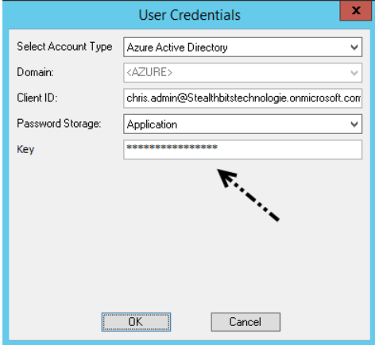

Summary: How to set up an App Password in Microsoft Entra ID (formerly Azure AD) for an O365 environment that uses Microsoft Entra multifactor authentication.
Issue: We do not support multifactor authentication within StealthAUDIT for SharePoint (SPAA) scans but we can configure an App Password within Microsoft Entra ID to allow us to use an Microsoft Entra account. App Passwords can be configured for a single account and store an unchanging password that does not require authentication after setting up the password in the connection profile.
Note: Before setting up the app password, assuming multi-factor authentication is turned on by default - the O365 admin or whomever you are in contact with must be there to handle the initial multi-factor authentication step. This typically means entering a phone number to receive the code sent by Microsoft Entra ID to authenticate the user.
Instructions:
-
Log into Microsoft Entra ID and click your name icon in the top right corner and select
My account.
- Logging into Microsoft Entra ID may still require MFA at this point, be prepared for the customer to give the code sent via text message or email to access Microsoft Entra ID.
- On the left select Security & Privacy
- Select Additional security verification
- Select Create and manage app passwords
- Click Create and name the password as you please
- Important: Copy the password somewhere safe, you won't be able to see it after closing this window.
Now create a connection profile (Azure Active Directory type) and copy the app password
you generated into the key field and save.

Product:
StealthAUDIT
Module: SA
- DC - SPAA - Activity;SA - DC - SPAA - Permissions
Legacy Article ID:
2086